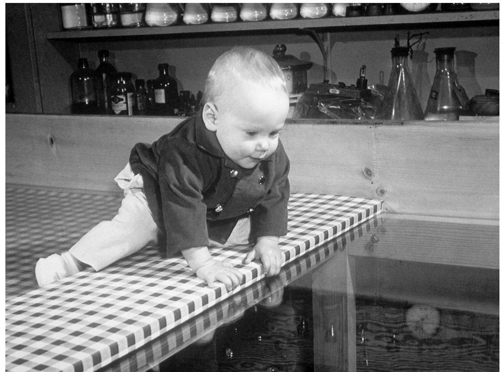

模仿实验表明婴儿并非“什么都不懂”。婴儿并不是不知道人们行为背后隐藏的心理原因。虽然有的研究者仍旧否认这一点，但是看上去婴儿会在脑海中做出假设：他人的行为背后存在心理动机。婴儿还会将“看”解读为有意图的行为。从很小的时候开始，婴儿就会追随他人的目光。他们似乎知道，我们会去看东西是因为希望能从中得到信息。会爬的婴儿如果看到成人很兴奋地看着藏在隔板后的东西，就会爬到一个能够让他们也能看到成人在看什么东西的位置。到了差不多8—10个月大的时候，还不会说话的婴儿会尝试将他人的注意力转向某个有意思的东西。他们会用手去指。从发展的角度来说，有两种指——一种是当你希望他人把这个东西拿给你的时候，另一种是当你仅仅想要他人也同样关注到这个东西的时候。第二种指，到了10个月以后会变得非常频繁，因为婴儿开始想要影响另一个人的心理状态了。这种指带有沟通意图。有意思的是，如果没有出现这种指的行为，则可能是婴儿罹患自闭症的早期信号。
对一个物体进行共同关注是一项关键的发展进展。这清楚地说明儿童已经能够明白他人的心理状态。共同关注的目的是交流和分享体验。理论上，儿童通过指来获取他人关注的时候，是在分享自己的心理状态（“我对这个有兴趣”）。这个儿童也同时展现出了对规范行为的了解（“这是我们会在心理上分享的东西，因为我们在同一个群体里”）。
也有人假设，共同关注是“自然教育”（一种传授文化知识的社会学习系统）的基础。一旦成人和婴儿对同一个物体有了共同的关注，他们便展开了围绕这个物体的互动。在这种互动中，照料者通常会将知识传递给儿童。这是一个适时回应的实例——婴儿对某个物体展现出兴趣，照料者回应，其中的互动能够促进学习。将儿童的关注点作为互动的起点，对有效的学习是非常重要的。当然，有技巧的照料者也会制造一些场景，让婴儿或儿童对特定的物体产生兴趣。这是有效的游戏学习法的基础。新鲜的玩具或物件总是有趣的。成人一直关注的物件，对婴儿来说也会很有趣——例如车钥匙和手机！
婴儿还会通过观察成人或其他儿童，来决定该如何应对陌生事物。这再一次显示出对他人心理状态的洞察力。这种观察，又称为“社会参照”，在多个实验场景中都出现过。例如有一组实验使用了一个长得有些吓人的机器人，这个机器人名叫“魔法麦克”。这个实验设置了一个共同关注的场景：当魔法麦克出现的时候，实验员告诉母亲要做出害怕或高兴的神情。母亲也配合恰当的语气说“多讨厌啊”或“多讨喜啊”（这两句话被刻意设计，听上去很相似，但婴儿却不常听到这样的说法）。在害怕的场景里，婴儿不仅没有靠近魔法麦克，而且变得不高兴了。而在高兴的场景里，婴儿的表现和“中性”场景里没有区别，在中性场景里母亲的表现是中性的。在高兴和中性的场景中，婴儿都接近了魔法麦克并和它玩耍。

图2 婴儿在视觉悬崖上
儿童心理学中关于社会参照最著名的实验，始于20世纪60年代，利用了图2里的“视觉悬崖”。能够爬行的婴儿被放在了有机玻璃桌面上。有机玻璃的表面盖住了黑白相间的方格，方格在水平面上比有机玻璃的表面低很多。方格的大小各异，以营造出深度的视觉效果，看上去像是悬崖般陡然下沉。实验显示，婴儿会爬到“悬崖”边上，然后看向他们的母亲寻求指示。如果母亲的神情是担心的，多数婴儿就不会再往前爬了。